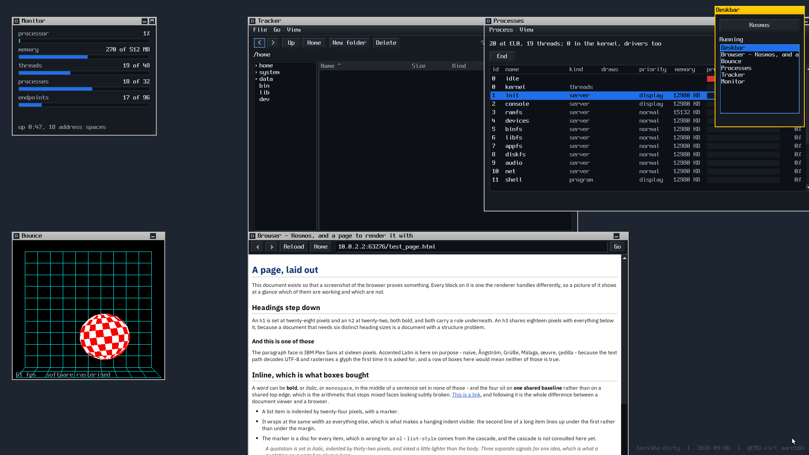
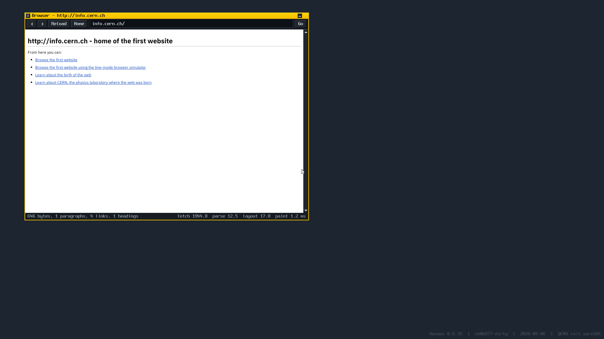
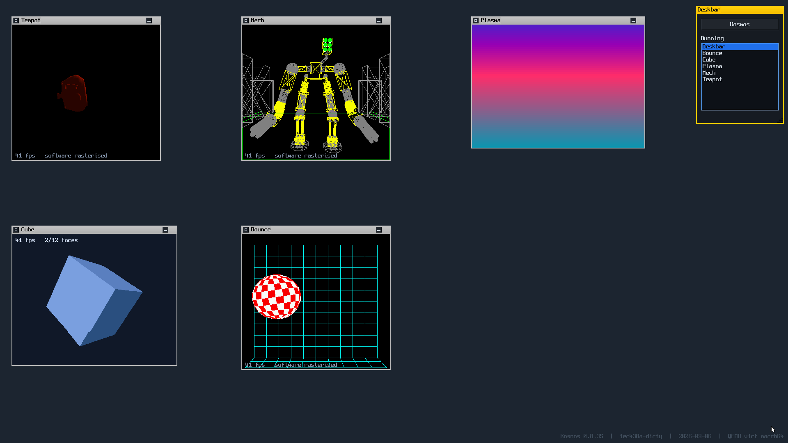
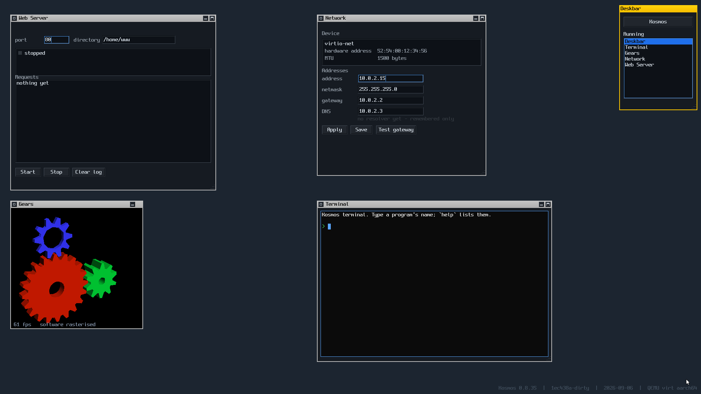
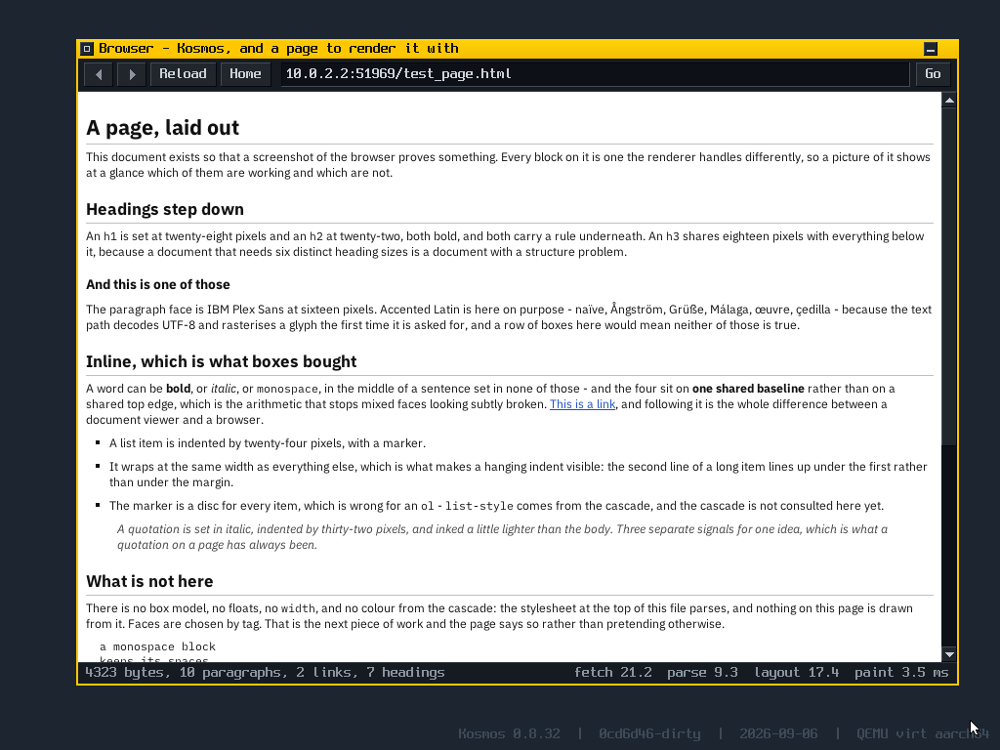

██ ███ ░████░ ▒████▒ ███ ███ ░████░ ▒████▒ ██ ▓██ ██████ ▒██████ ███ ███ ██████ ▒██████ ██ ▒██▒ ▒██ ██▒ ██▒ ▒█ ███▒▒███ ▒██ ██▒ ██▒ ▒█ ██░██▒ ██▒ ▒██ ██ ███▓▓███ ██▒ ▒██ ██ █████ ██ ██ ███▒ ██▓██▓██ ██ ██ ███▒ █████ ██ ██ ▒█████▒ ██▒██▒██ ██ ██ ▒█████▒ █████▒ ██ ██ ░█████▒ ██░██░██ ██ ██ ░█████▒ ██▒▒██ ██ ██ ▒███ ██ ██ ██ ██ ██ ▒███ ██ ██▓ ██▒ ▒██ ██ ██ ██ ██▒ ▒██ ██ ██ ▒██ ▒██ ██▒ █▒░ ▒██ ██ ██ ▒██ ██▒ █▒░ ▒██ ██ ██▓ ██████ ███████▒ ██ ██ ██████ ███████▒ ██ ▒██ ░████░ ░█████▒ ██ ██ ░████░ ░█████▒
A microkernel operating system with a userland written entirely in Lua.
A microkernel with a userland written entirely in Lua. A graphical desktop, a filesystem, a TCP/IP stack, a web browser — on AArch64, under QEMU, in about 6,700 lines of kernel.
The best ideas from every system I have used — mine, at least — and some new ones of my own, in one place. A personal experiment, and it is worth saying so before anything else.
Before any of the reasoning below, this is the thing itself. All of it software rendered - there is no GPU driver.

tile — arranging windows is the system's own job, and a
handle names exactly one window where dragging from outside would depend
on the stacking order.
wm browser:info.cern.ch/ — the first website
there ever was, found by asking a resolver rather than by being told four
numbers, fetched over the guest's own TCP/IP stack, redirect followed and
rendered.


One command. Nothing to clone, nothing to build, no toolchain:
sh -c "$(curl -fsSL https://raw.githubusercontent.com/dcibils-neuratek/kosmos/main/get-and-run-kosmos.sh)" -- -b "wm"You need QEMU, and it is the only thing that command cannot fetch for
you — brew install qemu on macOS,
apt install qemu-system-arm on Debian or Ubuntu. Everything
else, it works out: the newest published image, the runner, and a disk to
keep files on.
If your screen is smaller than 1920×1080, ask for the other build — the framebuffer size is compiled in, so a different resolution is a different image:
sh -c "$(curl -fsSL https://raw.githubusercontent.com/dcibils-neuratek/kosmos/main/get-and-run-kosmos.sh)" -- -r 1280x720 -b "wm"WSL is the easy way. Install QEMU inside it and the command above works unchanged; Windows 11 puts the window on your desktop by itself.
wsl --install # if you have not already
sudo apt install qemu-system-arm curlOr natively, with QEMU for Windows. The shell script will not run there, so this is what it would have done — download an image from builds/, make a disk beside it, and start it:
# A 64 MB disk. Kosmos formats a blank one itself the first time it
# is asked for a file.
$f = [IO.File]::Create("kosmos.img"); $f.SetLength(64MB); $f.Close()
qemu-system-aarch64.exe `
-M virt,gic-version=3 -cpu cortex-a72 -m 512M `
-netdev user,id=net0 -device virtio-net-device,netdev=net0 `
-drive file=kosmos.img,format=raw,if=none,id=disk `
-device virtio-blk-device,drive=disk `
-global virtio-mmio.force-legacy=false `
-device ramfb `
-device virtio-keyboard-device -device virtio-tablet-device `
-serial mon:stdio `
-fw_cfg name=opt/kosmos/boot,string=wm `
-kernel kosmos-0.8.35-a176d31-1280x720-full.elfTwo of those flags are not guessable, and
the system is quietly diminished without them.
virtio-mmio.force-legacy=false: QEMU's virtio-mmio devices
default to the legacy interface, which this system's driver correctly
refuses — without it there is no keyboard and no pointer, everything still
works over the serial line, and it looks like a Kosmos bug rather than a
missing flag. And virtio-tablet-device rather than a mouse: a
tablet reports absolute position, so the guest cursor cannot drift away from
the real one.
Only macOS is tested. Linux and Windows should both work — nothing in the image knows what host it is on, and QEMU is QEMU — but I have not run them, and saying otherwise would be pretending.
This is my own experimentation with ideas I have had and turned over for years, while using dozens of operating systems. It is my interpretation of what an operating system could be if you took the good practices and good ideas wherever they came from, added the ones I have reasoned my way to myself, and were free to ignore everything else.
That freedom is the whole point. There are no users to serve, no compatibility to keep, and no deadline — which is precisely what makes it possible to take decisions a commercial system cannot take, and to undo them when they turn out to be wrong. Several have been undone. The reasoning for every one of them is written down, including the mistakes.
It is not a product, not a startup, and not trying to replace anything. It is a thing I am building to understand how these things are built.
Not Unix, and not POSIX. No fork, no
exec, no signals, no pipes, no sockets, no
select, no ioctl, no file descriptors, and no path
you can reach without being handed a namespace. A libc that lives inside a
process and resolves I/O against that process's own namespace is fine and
necessary; a POSIX personality is not, and if a port asks for one, the port
gets patched. errno is per-process, never global.
Not Windows and not macOS. Nothing here is trying to be familiar, and there is no compatibility layer to be kind to.
Not AmigaOS, whose ideas I like and whose lack of memory protection is the thing this is furthest from — every driver here is a process behind its own address space, which is close to the opposite of a shared bus everything can reach.
And not a BeOS clone, though it is the reference. BeOS was monolithic, with the drivers and the filesystem inside the kernel. This takes its concurrency model, its live queries and its design sensibility; the architecture underneath is QNX's.
What it is, then: the best ideas from all of them — mine, at least — and some new ones I wanted to build, in one system. Free of the obligation to be compatible with any of them, which is the only reason that combination is possible at all.
Modern, secure, fast, lean, modular, and easy to write applications on. That last one is not an afterthought — it is what the other five are for.
C for speed and simplicity. The kernel, the drivers, the servers, the pixel loops. It is a small language that compiles to what you expect, which is the whole requirement for the parts that run on behalf of someone else.
Lua for writing applications. A syntax you can hold in
your head, fast enough for real work, and no compiler — an
application here is a text file in /bin, and the machine can
write and run one without a rebuild. The editor on the desktop is enough to
add a program to the system.
That is the idea: a blank canvas you can write applications on, without a toolchain. Most operating systems ask you to install gigabytes of compilers, headers and build systems before you can make the machine do something new. This one asks you to open the editor.
The line between the two is a layer, not a judgement: C is what runs on behalf of another process, Lua is what runs for a person. That was learned expensively — it used to be a judgement call about which servers were on a hot path, and the audio server was written in Lua because nobody recognised that a period is a frame with a different clock. It spun, it allocated inside a 5.8 ms deadline, and it could not print a diagnostic. Every one of those was a consequence of being a Lua process, not of anything it was trying to do.
BeOS is the reference. Not one influence among several — the one the desktop is drawn from, and the operating system I keep coming back to. The yellow tab that is only as wide as its title rather than a bar across the whole window; the Deskbar in the corner; replicants, where a view published by one program is adopted and run by another; typed attributes on files with live queries over them; a system that stays responsive because responsiveness was a design constraint rather than an optimisation.
The bet is BeOS's, updated: a desktop that feels instant on hardware that exists now. What is different is where BeOS did not have an answer — a microkernel underneath instead of a monolithic one, capabilities instead of ambient authority, per-process namespaces instead of a global filesystem. Those come from elsewhere, and mostly from QNX, Plan 9 and seL4.
Threads, address spaces, IPC and capabilities. It does not know what a file is. Everything else — the filesystem, the console, the window manager — is a process.
Per-process, with no global names anywhere. A program that was not
handed /dev does not get permission denied — the path does
not exist for it.
An index into your own table, never a global identifier. What you were not given, you cannot name.
The tab as wide as its title, the Deskbar, replicants, attributes and live queries. The reference this is drawn from rather than one influence among several.
The system can write and run its own programs. You can script a running application from the shell without it having any scripting code in it.
C is what runs on behalf of another process — the kernel, drivers, servers, pixel loops. Lua is what runs for a person.
One rule about what travels between things: the language's data model where the shape is the caller's to choose, a declared struct where the shape is agreed. IPC messages are Lua tables almost everywhere, and structs in a header both sides compile against at the boundary into a system server — for two reasons found by building it, not by planning it. A server has to stay correct when its caller is wrong, and a garbage collector cannot sit where something else's timing depends on it.
The audio server taught the second one. It took a 1024-byte period as a message payload 172 times a second, which meant a Lua string allocated on each side of every one: 340 KB a second of garbage manufactured inside a 5.8 ms deadline. It played, and it jittered, and no amount of scheduling fixed it — the collector was in the audio path by construction. Control by message, data by shared memory is a rule in this project because of that.
Once it boots, the Deskbar at the top right has everything. Or pass one
of these instead of wm:
| wm browser | A web browser. hubbub, libdom and libcss running at EL0 on a freestanding libc — it parses HTML, runs the CSS cascade, lays out text and paints it. It opens on a page compiled into the image, so it needs nothing running anywhere. |
| wm tracker | A file manager, with a real filesystem and a journal underneath it. |
| wm terminal | A terminal window. help lists what
there is. |
| wm cube3d | A 3D cube, rendered in software. |
| wm doom | Doom, once there is a WAD at
/home/doom1.wad. |
| wm paint | A paint program. |
| wm machine | Everything the system knows about the hardware it is running on, as text you can select and copy. |
| ping 8.8.8.8 | The TCP/IP stack, reaching the real internet through QEMU's NAT. |
| wm webserver | An HTTP server, under System in the Deskbar. |
Versions are major.minor.revision: a revision per push, a
minor when something substantial lands. There is no release schedule and
nothing here is stable — this is a learning project and the version number
is a bookmark, not a promise.
| 0.9 | A second architecture. Kosmos runs on
x86-64 as well as AArch64, and runs the whole desktop there: window manager,
Deskbar, Tracker, terminal, browser, network, disk and sound. All thirteen
files in kernel/ compile for both with no #ifdef in
any of them, and the display harness passes the same sixty-five checks on each
board in the same time. The four virtio drivers moved into a shared
directory rather than being rewritten, with each board bringing its own
transport underneath: fixed offsets from a device-tree window on one, a walk
of the PCI capability list on the other.
Since then, within 0.9: a clipboard, so text selected in
one application can be pasted into another — held by the window manager,
because it is the one process both of them already talk to. There are no
modifier keys on this machine and |
| 0.8 | A web browser, and a network under it. NetSurf's hubbub, libdom and libcss vendored unpatched and running on a freestanding libc: HTML parsed, the CSS cascade consulted, text laid out and painted. TCP, so a page can come off the real internet through QEMU's NAT, and an HTTP server to go the other way. The allocator learned to grow, so a program that needs memory asks for it instead of the whole system being rebuilt with a bigger heap. And the 64-bit-only line was drawn deliberately — which is what ruled the Pi 1 out. |
| 0.7 | The servers moved to C, one at a time. Audio first, because it sits on a deadline and proved the point; then the small ones, then the filesystem and the console. Hot reload was removed rather than argued for, having run out of things to reload. A journalled filesystem, and eight OpenGL demos each in its own address space. |
| 0.6 | The desktop before either of those: a window manager, a widget kit, a Deskbar, and applications that are separate processes talking by message. |
The kernel has no architecture-specific instruction left in it, and
that stopped being an aspiration the day a second architecture compiled it:
x86-64 runs the same kernel/ as AArch64, with no
#ifdef in any of the thirteen files. Next is SMP — real
multi-core scheduling — and then real hardware, a Raspberry Pi 5, chosen
because it is hard enough that a fast desktop on it would be a real result
rather than an emulator number.
SMP is further off than it looks, and the repository is specific about why: there is no per-CPU state and not a lock or an atomic anywhere in the kernel, because a uniprocessor does not need them. docs/smp.md counts what it would take.
Before that, two things the browser is waiting on: a resolver, so an address can be a name instead of four numbers, and a non-blocking send — half a frame is currently the application blocked on a message whose handler swaps an index and returns.
What it cannot do is a longer list than what it can, and the repository is specific about both. docs/state.md says where it actually is; docs/design.md has the reasoning behind every decision, and the decision log is a single table of every one of them with what it cost.